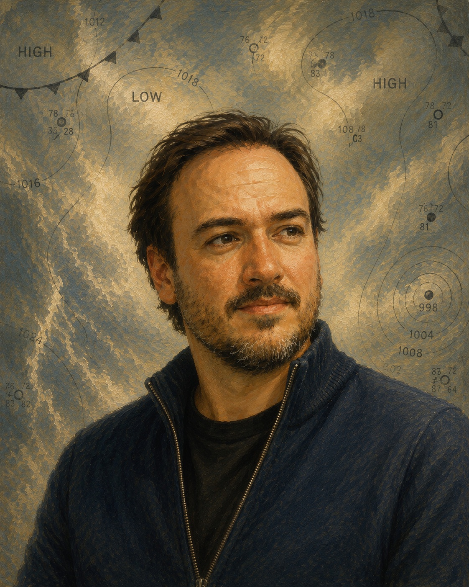

Tropical atmospheric dynamics
Large-scale circulation, tropical waves, atmospheric convection, and their role in regional climate.
Atmospheric Science · Tropical Climate
Atmospheric Scientist | Tropical Climate Dynamics | Hydroclimatology
I study the physical processes that shape tropical atmospheric circulation, convection, precipitation, and climate variability, with a particular interest in Mexico, Mesoamerica, the Caribbean, and tropical South America.
Exploring the tropical atmosphere through observational data, scientific maps, and open-source tools.

01 / ABOUT
I am a research scientist in the Departamento de Cambio Climático at the Instituto de Ciencias de la Atmósfera y Cambio Climático (ICAyCC) , Universidad Nacional Autónoma de México (UNAM) .
My research is driven by a central question: how do tropical atmospheric processes, from large-scale circulation to organized convection, shape rainfall and climate variability? I work across a range of time scales, from synoptic weather systems and intraseasonal oscillations to interannual climate fluctuations, seeking physical explanations for the patterns we observe.
Much of my work focuses on Mexico, Mesoamerica, the Caribbean, and northern South America. I have investigated the influence of the El Niño–Southern Oscillation (ENSO), the Madden–Julian Oscillation (MJO), and other modes of variability on precipitation, tropical cyclones, and regional hydroclimate. These questions connect atmospheric dynamics with practical challenges, including heavy rainfall, drought, thunderstorms, and vulnerability to weather-related hazards.
My research also includes studies of tropical clouds, aerosols, and atmospheric processes, reflecting an interest in understanding how different components of the climate system interact. I combine observations, reanalysis datasets, numerical simulations, and quantitative diagnostics to examine the mechanisms behind tropical weather and climate.
I value collaborative, reproducible research and the development of scientific tools that can be used by the wider community. Through open-source software such as PyWKSpectra , I aim to make methods for exploring tropical atmospheric variability easier to apply and reproduce.
02 / RESEARCH
My research spans processes and time scales that influence tropical weather, rainfall, and regional climate.
Large-scale circulation, tropical waves, atmospheric convection, and their role in regional climate.
ENSO, the Madden–Julian Oscillation, and subseasonal-to-interannual variations in tropical rainfall.
Rainfall variability, tropical cyclones, severe weather, and hydroclimatic hazards in Mexico and the Americas.
Reproducible analysis, climate datasets, and open-source tools for atmospheric research.
03 / PUBLICATIONS
My publications include peer-reviewed journal articles, book chapters, and science communication pieces. The complete list is organized by category and publication year.
04 / CONTACT
I welcome opportunities to connect with researchers and students who share an interest in tropical atmospheric dynamics, climate variability, and hydroclimatology. Whether you are exploring a new scientific question, looking for common ground between complementary approaches, or interested in developing a collaborative project, I would be glad to hear from you.
I also welcome inquiries from prospective undergraduate and graduate students interested in research projects or thesis work involving tropical circulation, convection, precipitation, climate diagnostics, and related topics. If you would like to discuss a potential idea, feel free to send me a brief introduction and describe your interests. Opportunities for supervision and collaboration depend on research fit and availability.
Departamento de Cambio Climático
Instituto de Ciencias de la Atmósfera y Cambio
Climático (ICAyCC)
Universidad Nacional Autónoma de México (UNAM)
Mexico City, Mexico